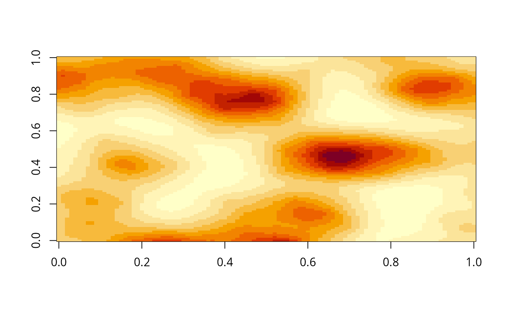
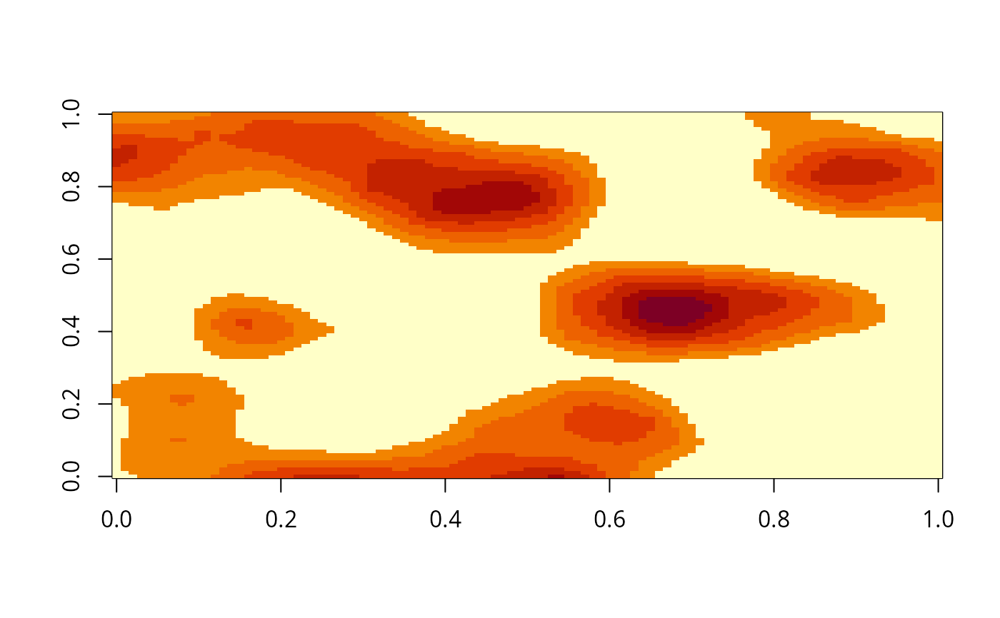

Variation of the watershed algorithm for summit detection
Source:R/pspace-watershed.R
summitWatershed.RdThe summitWatershed function implements a segmentation
strategy to identify summits within a landscape image generated by the
PathwaySpace package. This function is entirely coded in R, which helps
alleviating users from the task of loading an excessive number of
dependencies. Nonetheless, while this novel implementation prevents
the burden a 'dependency heaviness', it still requires optimization
as it currently exhibits slower performance compared to well-established
implementations such as the watershed function from the EBImage package.
The summitWatershed maintain a certain level of compatibility
with the EBImage's watershed function, and both can be used in the
PathwaySpace package.
Examples
# Load a demo landscape image
data('gimage', package = 'PathwaySpace')
# Scale down the image for a quicker demonstration
gimage <- gimage[200:300, 200:300]
# Check signal range
range(gimage, na.rm = TRUE)
#> [1] 0.2733407 0.9760202
# [1] 0 1
# Check image
# \donttest{
image(gimage)

# }
# Threshold the signal intensity, for example:
gimage[gimage < 0.5] <- 0
# Run summit segmentation
gmask <- summitWatershed(x = gimage)
# Check resulting image mask
# \donttest{
image(gimage)

# }